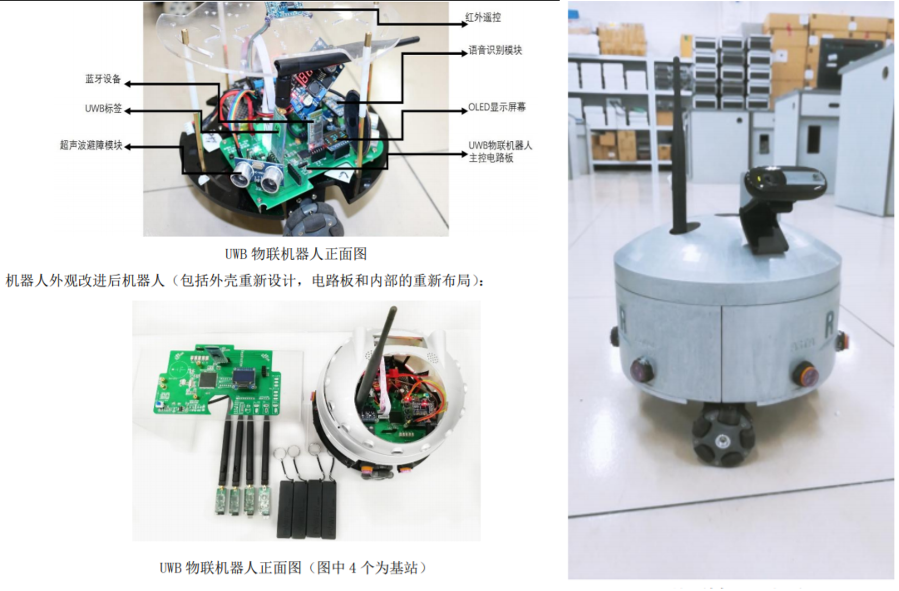

Desc: I interned for three months in the NetEase Fuxi Robot Home Robot Group and deeply participated in the development of the
massage robot project. Among them, I mainly completed the following tasks:
1. Fast bone recognition speed from 140s to 0.2s
2. Complete the self supervised learning process, improving human body accuracy by 10 points
3. Simultaneously completing the reconstruction process of 3D bones and 3D human body, and achieving acupoint recognition and muscle recognition based on the project.
IntroductionThe project requires the completion of the required page segmentation, text detection, recognition,
and retrieval process by inputting PDF. And conduct testing on required standards (such as R labeling, health labeling information, barcodes), identify enterprise information, ingredient lists, functions, precautions, approval numbers, and
license numbers, and identify content that can be added or subtracted for efficacy, and search for special characters.
Achievement A simple interactive interface was built using tkenter, achieving the above requirements and meeting project
expectations

UWB based IoT robot
person in charge
Introduction Based on UWB indoor positioning technology, the development of indoor intelligent robots has been achieved. In
response to the current UWB technology, we have integrated inertial navigation to optimize positioning, achieving
positioning accuracy within a range of 10cm, and also optimizing and improving the impact of non line of sight.
Completely handmade related circuit boards, program development, and 3D printing shells
Achievement Achieved excellent completion of national level innovation projects
Second Prize in the National College Student Intelligent Interconnection Competition.
Second Prize in the National College Intelligent Robot Creative Competition.
Second Prize in Zhejiang Provincial Physics Competition.
Interests
Besides the research study, I love to spend time for sport. I am also a beginner of diving. Except for outdoor activities, I do also read books, especially poetry and prose.i.e.席慕容(XiMurong) and 王开岭(Wang Kailing).
{kind=link}
![[Poster]](papers/poster.jpg){kind=link}